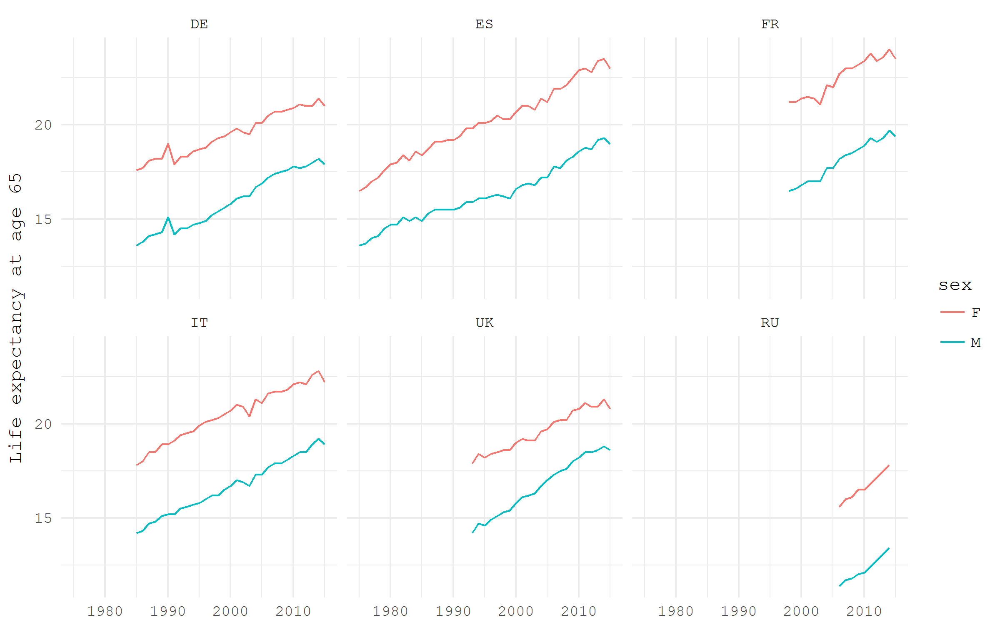
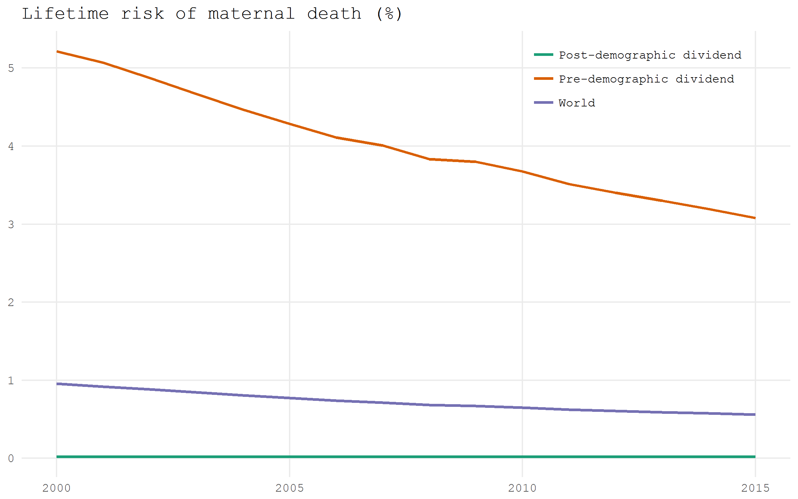
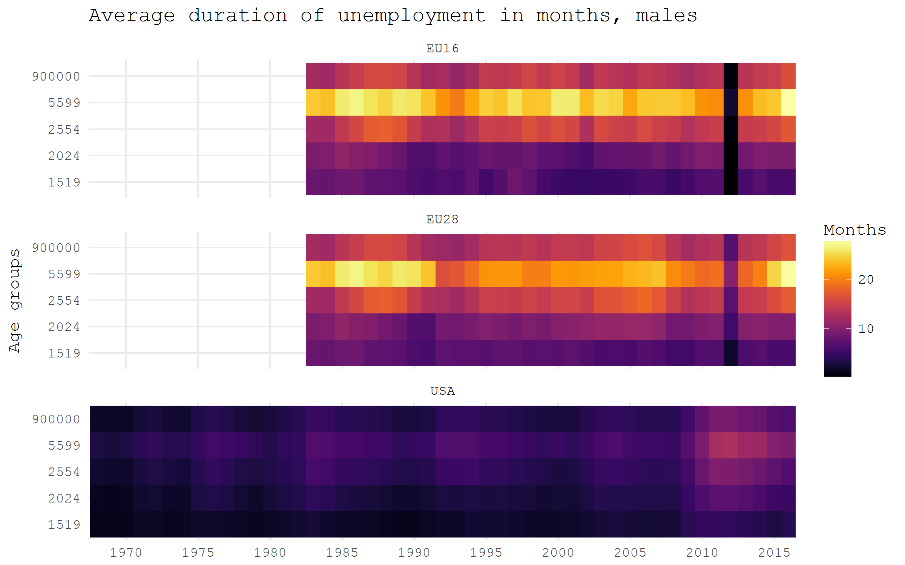
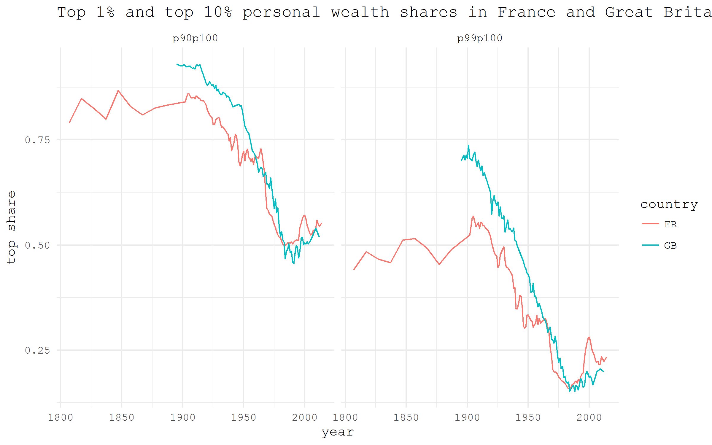

![]()
-
Loading prepared datasets
-
Accessing popular statistical databases
-
Demographic data sources
- Getting spatial data
For each of the data acquisition options I provide a small visualization use case.
Eurostat
The package eurostat has a function search_eurostat to search for the relevant datasets. Though, sadly enough, this function does not provide the codes of all the datasets that has the expression of interest in the title. For example, the search on the expression life expectancy produces an output with just 2 results, which does not make any sense. Thus, the best strategy is to go to Eurostat website, find the needed dataset code, and fetch the desired dataset by its code. Note that there is a separate database for subregional level indicators.
I am going to download life expectancy estimates for European countries; the dataset code is demo_mlexpec.
It can take a while because the dataset is quite big (0.4m obs). If the automated procedure does not work, one can download the data manually via the Bulk Download Service of Eurostat.
Let’s have a look at the remaining life expectancy at age 65, the most common conventional age at retirement, in some European countries, separately for males, females, and total population. Some data preparation steps are needed. First, we only need the life expectancy estimates for those aged 65. Next, we don’t need total population, only males and females separately. Finally, let’s select just a bunch of countries: Germany, France, Italy, Russia, Spain, the UK.
e0 |>
filter(! sex == "T",
age == "Y65",
geo %in% c("DE", "FR", "IT", "RU", "ES", "UK")) |>
ggplot(aes(x = time |> year(), y = values, color = sex))+
geom_path()+
facet_wrap(~ geo, ncol = 3)+
labs(y = "Life expectancy at age 65", x = NULL)+
theme_minimal(base_family = "mono")
World Bank
There are several packages that provide an API to World Bank data. Probably, the most elaborated one is a fairly recent wbstats. Its wbsearch function really does great job searching through the database for the relevant datasets. For example, wbsearch("fertility") produces a dataframe of 339 entries with the codes and names of the relevant indicators.
library(tidyverse)
library(wbstats)
# search for a dataset of interest
wbsearch("fertility") |> head| indicatorID | indicator | |
|---|---|---|
| 2479 | SP.DYN.WFRT.Q5 | Total wanted fertility rate (births per woman): Q5 (highest) |
| 2480 | SP.DYN.WFRT.Q4 | Total wanted fertility rate (births per woman): Q4 |
| 2481 | SP.DYN.WFRT.Q3 | Total wanted fertility rate (births per woman): Q3 |
| 2482 | SP.DYN.WFRT.Q2 | Total wanted fertility rate (births per woman): Q2 |
| 2483 | SP.DYN.WFRT.Q1 | Total wanted fertility rate (births per woman): Q1 (lowest) |
| 2484 | SP.DYN.WFRT | Wanted fertility rate (births per woman) |
Let’s have a look at the indicator Lifetime risk of maternal death (%) (code SH.MMR.RISK.ZS). World Bank provides a variety of country groupings. One of the curious groupings divides countries based on the advance over the Demographic Transition path. Below I plot our selected indicator for (1) the countries that have passed the Demographic Transition, (2) the countries that haven’t yet experienced demographic dividend, and (3) the whole World.
# fetch the selected dataset
df_wb <- wb(indicator = "SH.MMR.RISK.ZS", startdate = 2000, enddate = 2015)
# have look at the data for one year
df_wb |> filter(date == 2015) |> View
df_wb |>
filter(iso2c %in% c("V4", "V1", "1W")) |>
ggplot(aes(x = date |> as.numeric(), y = value, color = country))+
geom_path(size = 1)+
scale_color_brewer(NULL, palette = "Dark2")+
labs(x = NULL, y = NULL, title = "Lifetime risk of maternal death (%)")+
theme_minimal(base_family = "mono")+
theme(panel.grid.minor = element_blank(),
legend.position = c(.8, .9))
OECD
Organization for Economic Cooperation and Development provides detailed economic and demographic data on the member countries. There is an R package OECD that streamlines the use of their data in R. The function search_dataset works nicely to browse the available datasets by keywords. Then get_dataset would fetch the chosen dataset. In the example below I grab the data on the duration of unemployment and then plot the data for the male population of EU16, EU28 and the US as heatmaps.
library(tidyverse)
library(viridis)
library(OECD)
# search by keyword
search_dataset("unemployment") |> View
# download the selected dataset
df_oecd <- get_dataset("AVD_DUR")
# turn variable names to lowercase
names(df_oecd) <- names(df_oecd) |> tolower()
df_oecd |>
filter(
country %in% c("EU16", "EU28", "USA"), sex == "MEN", ! age == "1524"
) |>
ggplot(aes(obstime, age, fill = obsvalue))+
geom_tile()+
scale_fill_viridis("Months", option = "B")+
scale_x_discrete(breaks = seq(1970, 2015, 5) |> paste)+
facet_wrap(~ country, ncol = 1)+
labs(x = NULL, y = "Age groups",
title = "Average duration of unemployment in months, males")+
theme_minimal(base_family = "mono")
WID
World Wealth and Income Database is a harmonized dataset on income and wealth inequality. The developers of the database provide an R package to get their data, which is only available from github so far.
library(tidyverse)
#install.packages("devtools")
devtools::install_github("WIDworld/wid-r-tool")
library(wid)The function to acquire data is download_wid(). To specify the arguments, one would have to consult help pages of the package and select desired datasets.
?wid_series_type
?wid_conceptsThe following nice example is adapted from the package vignette. It shows the share of wealth that was owned by the richest 1% and 10% of population in France and Great Britain.
df_wid <- download_wid(
indicators = "shweal", # Shares of personal wealth
areas = c("FR", "GB"), # In France an Italy
perc = c("p90p100", "p99p100") # Top 1% and top 10%
)
df_wid |>
ggplot(aes(x = year, y = value, color = country)) +
geom_path()+
labs(
title = "Top 1% and top 10% personal wealth shares in
France and Great Britain",
y = "top share"
)+
facet_wrap(~ percentile)+
theme_minimal(base_family = "mono")